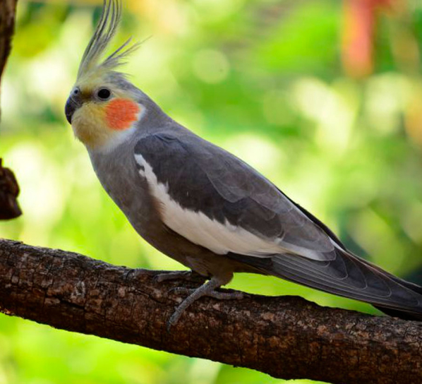
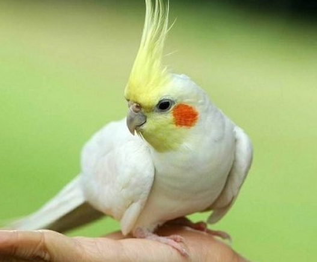
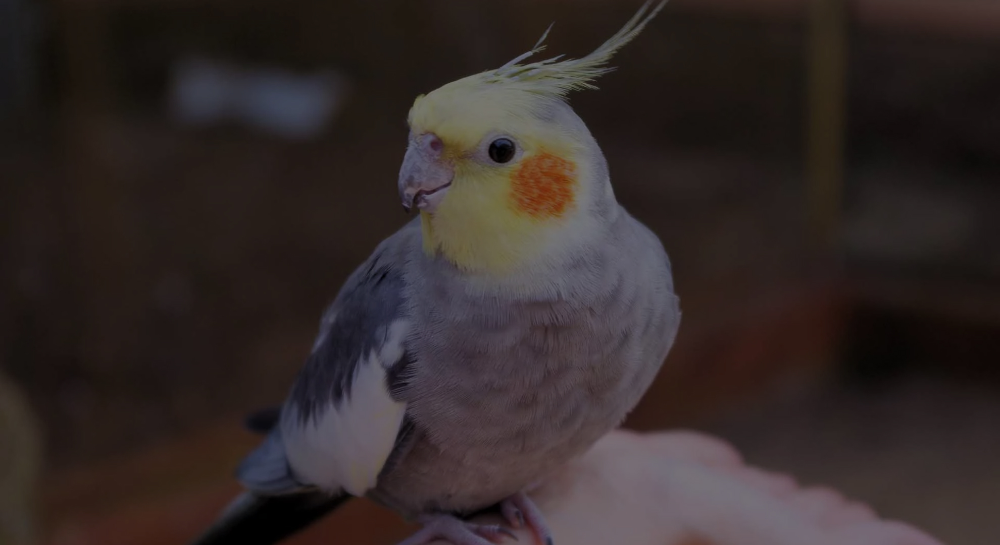

Особливості поведінки та характеру:
Корелли люблять "поговорити" і пограти, часто стукають дзьобом по поверхнях. У хлопчики цікаво підстрибують і характерно складають крильця у формі серця. Самки ж спокійніші. Замість енергійних ігор, вони краще зайвий раз подрімають.

Найбільш підходяща їжа
Папуги корелло в їжі невибагливі, проте з недовірою ставляться до нових продуктів. Тому вводять овочі та фрукти поступово. Маленький шматочок нового продукту ховають у зернову суміш, тоді є ймовірність, що папуга випадково його спробує і надалі вже не остерігатиметься його їсти. Зернова суміш зазвичай складається з 2-3 видів насіння.


Догляд та настави лікаря
Місце, для розташування клітини з пернатим екзотичним вихованцем, обов’язково повинно бути огороджено від протягу або холодного повітря. Тропічна птах дуже теплолюбива, тому вкрай важко переносить темперні перепади, в результаті яких може захворіти або навіть загинути.
Оптимальною і максимально комфортною для Кореллі є температура в межах 22-24оС. Крім усього іншого, при домашньому утриманні взимку, в умовах включених опалювальних приладів, спостерігається підвищена сухість повітря в приміщенні, тому необхідно використовувати кімнатні зволожувачі. Регулярно потрібно замінювати наповнювач лотка в клітці, а також щотижня ретельно мити поїлки, годівниці і все іграшки папугу.